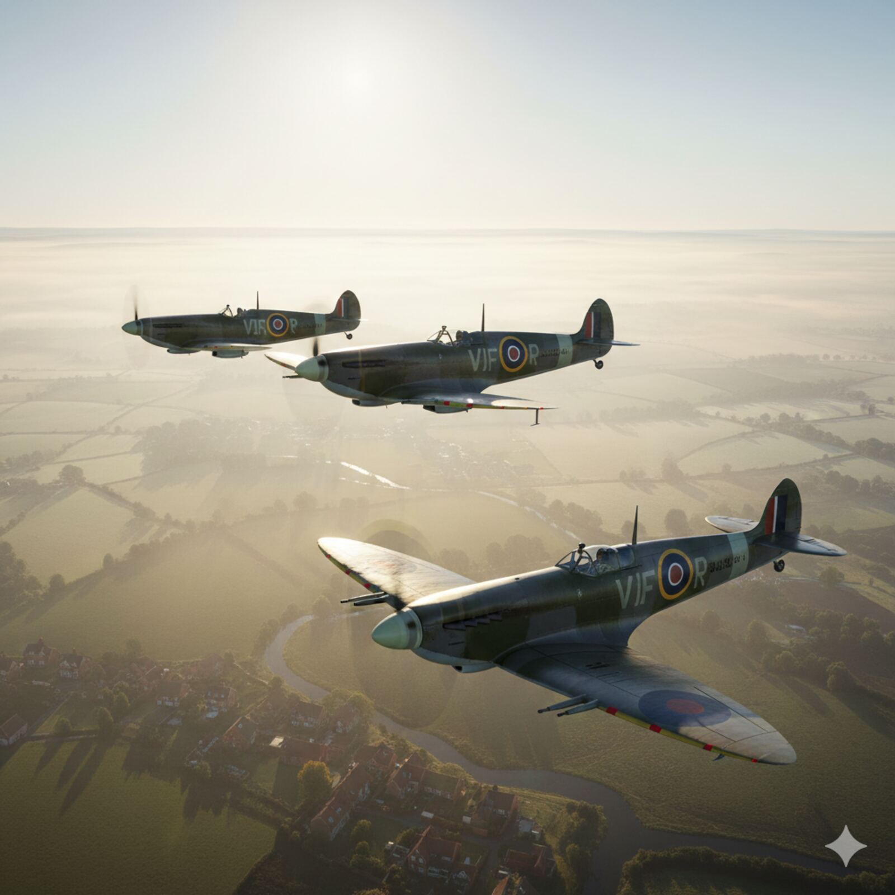

BATTLE OF BRITAIN — RAF SCRAMBLE
OVERVIEW
A cinematic study in historical accuracy — recreating a documented 1940 event through hard-surface modelling and atmospheric simulation.
A cinematic short recreating an RAF scramble during the Battle of Britain, centred on a Supermarine Spitfire Mk IX at RAF Kenley. Hard-surface modelling from mechanical blueprints, atmospheric volumetrics, and UE5 Sequencer animation. The project operated under a single constraint: accuracy. Not approximation, not artistic licence — reconstruction. If a detail could be verified against archive material, it was. If it couldn't, the most conservative reading was applied. Historical research and 3D craft were treated as a single discipline.
PROCESS
01
BLUEPRINTS
Mechanical reference was sourced from official RAF technical drawings of the Supermarine Spitfire Mk IX — including panel lines, rivet placement, undercarriage geometry, and control surface dimensions. This level of reference ensured the model could withstand close scrutiny. The elliptical wing planform that defines the Spitfire's silhouette was used as the primary modelling guide, with all proportions derived from the technical record rather than photographic approximation.
02
MODELLING
Hard-surface modelling in Blender followed the blueprints at every scale — from the broad fuselage shape down to exhaust stacks, pitot tube, aerial mast, and the gap geometry of control surfaces. Particular attention was paid to the characteristic bulge of the Merlin engine cowling and the subtle asymmetry of the original airframe. The model was built to function at close camera distance without visible approximation.
03
ATMOSPHERE
The atmospheric environment was built in Unreal Engine 5 using volumetric fog layers, procedural cloud systems, and era-appropriate lighting conditions. The objective was to recreate the visual quality of 1940s newsreel footage — overcast Channel light, thin cloud layers at multiple altitudes, and the desaturated palette of a wartime English summer. Lumen and volumetric rendering were calibrated to achieve a photographic quality without visible CGI artifacting.
04
SEQUENCE
Camera animation in UE5 Sequencer choreographed the scramble narrative from standing start to wheels-up. Timing was developed to emphasise the drama of the event — tight groundwork cuts establishing context, giving way to wide aerial shots as the aircraft climbs through the lower cloud layer. Sound design references from period recordings informed the pacing of the edit, treating the sequence as a film production problem rather than a purely technical one.